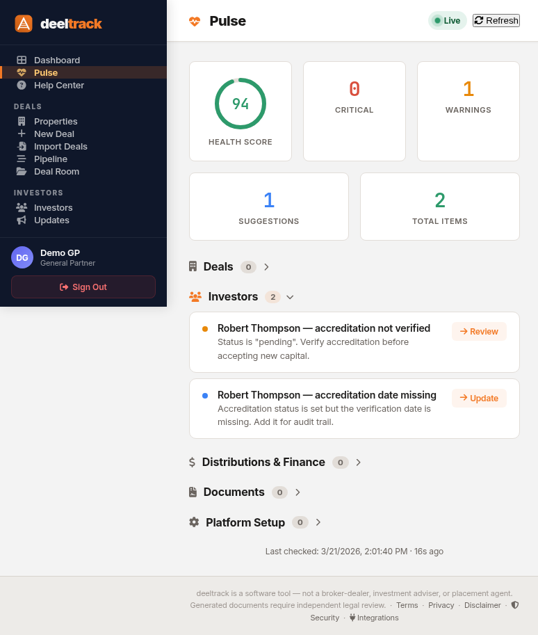

Pulse: Your Portfolio Health Dashboard

Managing a syndication portfolio means keeping track of hundreds of details across multiple deals, investors, and compliance deadlines. Accreditation expiring? K-1s not delivered? A deal sitting in LOI for 90 days? A draft distribution from two months ago that never got posted?
These things slip through the cracks. Not because you're careless — because you're busy closing deals. Pulse is your automated second set of eyes.
How It Works
Pulse scans your entire portfolio in real time and generates a health report across five categories:
- Deals — Missing fields, stale pipeline, under-raised closes, past-due dates
- Investors — Expired accreditation, missing emails, $0 commitments, duplicate contacts
- Distributions & Finance — Draft distributions sitting too long, over-distribution warnings, incomplete wire details
- Documents — Missing OAs, no subscription docs in deal rooms, K-1s not filed
- Platform Setup — Missing firm name, incomplete wire instructions, billing warnings
Severity Levels
Not every issue is equally urgent. Pulse categorizes findings by severity so you can triage:
- Critical — Requires immediate action. Expired accreditation, distributions exceeding equity, billing expired.
- Warning — Should be addressed soon. Missing banking details, deals past close date, incomplete settings.
- Suggestion — Nice to fix. Missing deal fields, investors not linked to deals, placeholder email addresses.
The Health Score
Pulse calculates a portfolio health score from 0 to 100 based on the severity and count of findings:
- Each critical issue: -15 points
- Each warning: -5 points
- Each suggestion: -1 point
A score of 100 means zero open findings — your portfolio is clean. A score below 50 means you have critical issues that need attention. The goal isn't perfection — it's awareness.
What Pulse Actually Catches
Here are real examples of issues Pulse flags:
Deal Issues
- Deal marked "Closed" but only 29% of equity raised — target raise needs updating
- Operating deal with zero posted distributions — expected if pre-stabilization, but worth checking
- Deal in DD/LOI status for 90+ days — update status or move to dead
- Pref return above 15% — verify this is intentional
- GP promote above 50% — flag for review
Investor Issues
- Accreditation expired 45 days ago — re-verify before accepting new capital
- Accreditation expiring in 12 days — proactive outreach
- Investor has no email on file — can't send K-1s or notices
- Investor linked to a deal with $0 committed — fix commitment or remove
- Wire method selected but no banking details — will delay distributions
Financial Issues
- Draft distribution sitting for 45 days — post it or delete it
- Total distributions exceed 2x equity — verify records
- Wire instructions incomplete — investors won't receive complete payment details
- Routing number failed checksum validation — double check with your bank
Document Issues
- Active deal with no operating agreement generated — generate from deal detail
- No subscription docs in deal room — investors need these
- Distributions posted in 2025 but no K-1s on file for tax year 2025
Click any finding and Pulse takes you directly to the page where you can resolve it — investor detail, deal settings, distributions, or wherever the fix lives. No hunting.
Live Updates
Pulse re-scans automatically every 30 seconds while you have the page open. Fix an issue, come back to Pulse, and it's already gone from the list. No manual refresh needed.
This makes Pulse perfect for a "morning check-in" workflow: open it, scan the findings, fix anything critical, and move on to your actual work knowing nothing is slipping through the cracks.
Why This Exists
We built Pulse because the alternative is checking everything manually. Open each deal — is the raise on track? Check each investor — is accreditation current? Review the distribution log — anything stuck in draft? Verify settings — are wire instructions complete?
That's a 30-minute task when you have 5 deals and 15 investors. When you have 15 deals and 50 investors, it's hours. And the longer it takes, the less often you do it, which is exactly when things slip.
Pulse does the check in under 3 seconds and tells you exactly what needs attention.
Know what needs attention — before it becomes a problem.
$49/deal/month. Pulse included. No add-on fees.
Get Started Free →